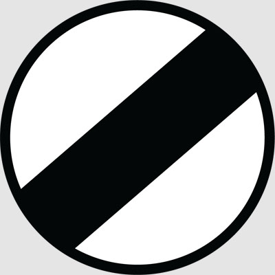
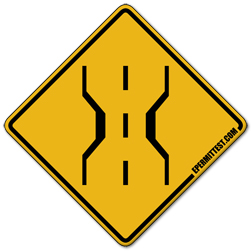
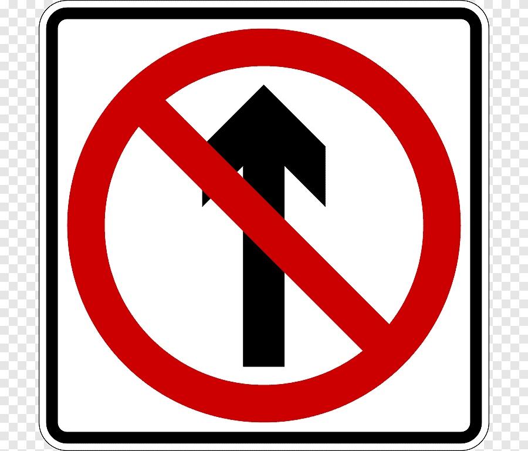
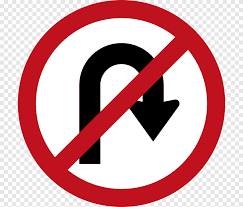
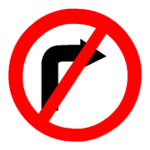
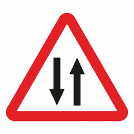
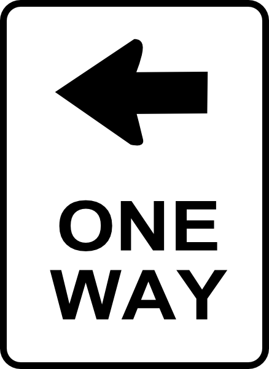
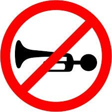
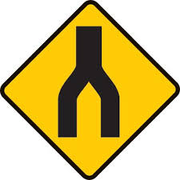

Stop: A sign on the road that tells drivers of vehicles to stop and not to continue until it is safe.
End Of Speed: This sign indicates that the restriction imposed by the sign/signs is no more valid beyond this point.

Give Way: Give way means to slow down and, if necessary, stop in order to prevent a crash from happening.
Narrow Bridge: Sometimes road converges to a bridge which is of less width than that of road

No Parking: This sign indicates that drivers are not allowed to park their vehicles in the area indicated by the sign.

No Uturn: The driver is not legally allowed to make a U-turn (a turn in the road to go the opposite direction).


Walk: The “walk” signal indicates that pedestrians may cross the street

Right Turn: This sign directs the driver to turn right only, there could be any reason for it but obeying this signal would lead to safety and hassle free drive.

Two Way: These two way traffic signs warn drivers that they're leaving a one-way roadway and entering a roadway with opposing traffic

One Way: This indicates that the traffic flow is allowed in only one direction

Horn Prohibited: This sign is used on stretches of the road where sounding of horn is not allowed, near hospitals and in silence zones.

Danger: These signs warn you to slow down and be prepared to stop if necessary; a special situation or hazard is ahead.